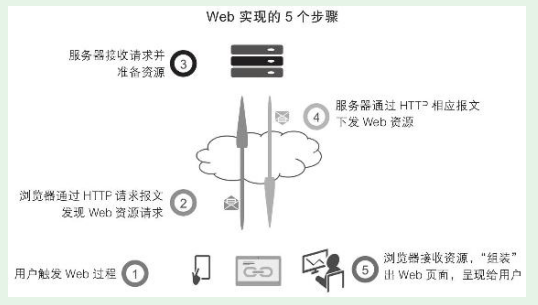

1. 第1节 Web端规划概述
1.1. Web规划设计的基础技术知识
技术的限制与技术提供的可能性，这二者是我们产品人真正关心的。我们掌握基本的技术知识，就是为了对技术的限制（什么效果实现不了？）和技术的可能性（居然可以实现这个功能？）有更清晰地理解，帮助我们做好产品。
而Web端同时受到硬件、操作系统、浏览器的限制
1.1.1. 高度概括的Web实现的五个步骤

1.1.2. Web技术知识体系
- 基础的Web技术知识体系
·万维网原理； ·HTML标签语言； ·CSS层叠样式表； ·JavaScript编程； ·HTTP传输协议、JSON数据交互格式； ·服务器端编程； ·数据库与SQL语句。
1.1.3. Web端技术对产品规划的约束
- （1）本地资源难调用。
- （2）断网基本不可用
（3）功能不如App强大。
掌握基本的Web技术知识，不是要让产品人自己进行开发，理解Web的内在机理，这样才能规划出好的产品Web端。
- 系统掌握一点Web技术知识，也便于和Web端开发人员更好地沟通合作
1.2. Web端规划的主要内容
1.2.1. 整站的页面结构规划
- 确定整个网站的树状结构，有哪些页面，以及页面之间的层级关系。
1.2.2. 全局规划：header、footer、全局导航、全局交互、404页面等
- 影响整个Web端的规划，想清楚了能节省很多时间。
- 在原型中进行全局交互说明，效率更高
1.2.3. 各个页面的单独规划
1.2.4. 专门的交互规划
- 全局交互规划不能覆盖，就需要进行专门的交互规划
1.2.5. 市场、运营活动页面的专门规划
- 前几步是常规，这一步常常被忽略。一般认为，产品、运营活动页面应该交给市场、运营部门去做。但实战中发现，这些页面有一些鲜明的特点：时效性强、聚焦主题、有较强的数据采集考虑等。如果完全交给市场、运营来做，因为这些部门不是专业的产品部门，会有很多问题考虑不到，进而产生很多问题。